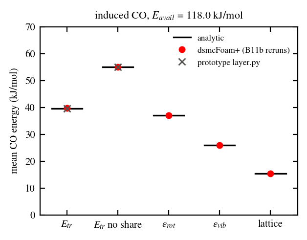
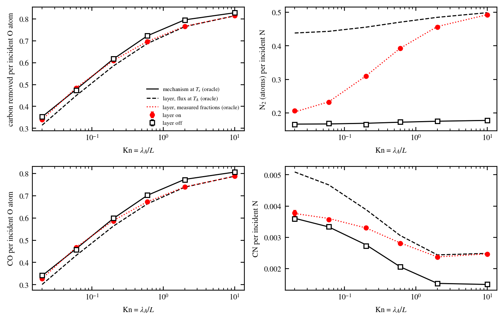
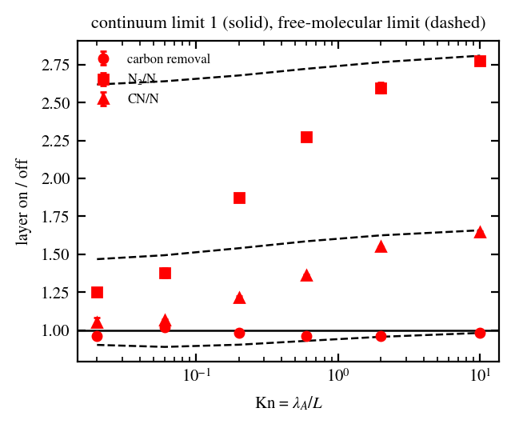
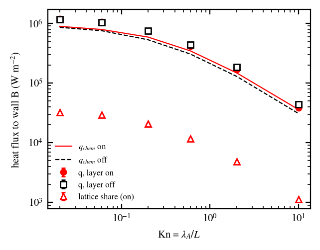
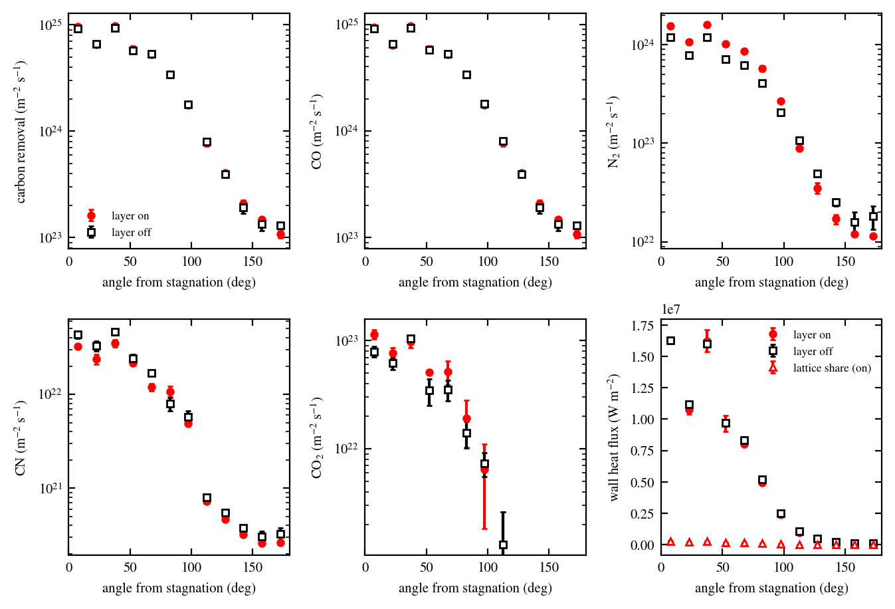
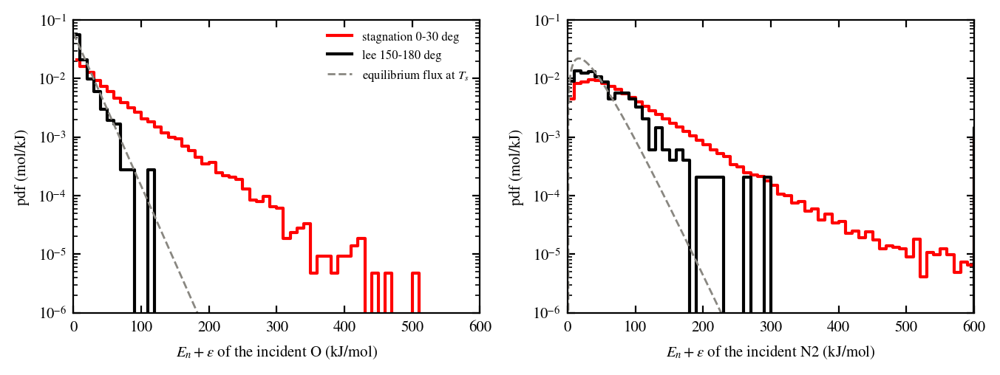
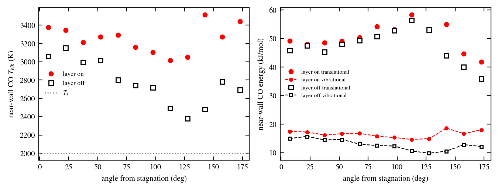

B11c: induced product energy and the state-resolved layer in flows
Verified: the product energy of the induced (spectator) events of the
state-resolved layer of B11b: state-resolved gas-surface layer (stage B11c), then the
layer in two flows: a one-dimensional gap between a hot reservoir and a
carbon wall (Kn 0.02-10) and the two-dimensional carbon cylinder of
Application: carbon cylinder under the ACA mechanism, each with the layer on and off. Against: the
analytic microcanonical sharing of the available energy with the lattice
share, the ACA steady state [PR22_gsi] and the layer for a free-molecular
flux at the reservoir temperature (oracle
run/GSI/B11_qk_surface/applications/oracle/fourier_oracle.py), and the
same runs with the layer off. Full notes:
docs/Development/Verification/gsi/b11c_induced_energy.md and
run/GSI/B11_qk_surface/applications/RESULTS.md.
Induced product energy
The gas products of the spectator rows of the ACA (rows 3, 7, 12, 17 and
20) left with the reaction’s kernel in B11b (CO diffuse at \(T_s\)).
With stateResolved true they now leave from the transition state of
the induced reaction: the available energy
\(E_{av} = k E_a + \Delta E\) (117.95 kJ/mol for CO) is shared
microcanonically between the products, and the lattice takes the share
\(f = 4\mu/(1+\mu)^2\) of the normal translational part. The impinging
spectator keeps its state, so the rates of the spectator rows stay state
independent. The share is booked per element (latticeElement of the
surface-state file, eLattice of the immersed chemistry) and is part of
the wall heat.
Induced CO (8.0e6 events, 12 runs pooled), kJ/mol |
ours |
analytic |
ratio |
|---|---|---|---|
Translational, with the lattice share |
39.655 |
39.648 |
1.00016 |
Translational, without the share |
55.064 |
55.072 |
0.99986 |
Rotational |
37.019 |
37.009 |
1.0003 |
Vibrational |
25.870 |
25.873 |
0.9999 |
Lattice share per event |
15.409 |
15.424 |
0.9991 |
The per-event ledger \(E_{av}\) = products + lattice closes to \(2.6\times10^{-16}\). The values 40.0 and 55.4 kJ/mol of the earlier prototype note (2e4 events) were sampling noise of the same sharing. Against the Eley-Rideal/hot-atom CO of Murray et al. (24.9-28.0 kJ/mol), the induced CO is 1.4-1.6 times too energetic with the lattice share and 2.0-2.2 times without it. With the layer off, the B11b runs are reproduced bit for bit.


Induced CO: mean translational (with and without the lattice share), rotational, vibrational and lattice energies, pooled over the B11b reruns (red), against the analytic sharing (black) and the prototype.
One-dimensional gap
Set-up. Gap of 1 mm, one cell wide with specular side walls. Wall B
(\(y = 0\)) is carbon: dsmcCoverageWallPatch with the ACA at
\(T_s\) = 1500 K. Wall A (\(y = L\)) is a reservoir: it
absorbs every parcel that reaches it and emits the one-sided equilibrium
flux of a gas at rest at \(T_A\) = 4000 K with the fixed composition
of the ACA cylinder stream (O, O2, N, N2). A reflecting
diffuse wall A would close the gap, and wall B would then turn its atoms
into CO and N2 with no steady state. Gas chemistry frozen;
Kn = \(\lambda_A/L\) = 0.02, 0.06, 0.2, 0.6, 2 and 10; 2 seeds per
point.
Results.
Layer off: carbon removed per incident O within 0.9 % and N atoms recombined per incident N within 2.2 % of the ACA steady state at the measured incident fluxes, at every Kn.
Free-molecular limit (Kn = 10): the layer for a flux at \(T_A\) gives C/O = 0.8144 and N2/N = 0.4988; ours 0.8147 (+0.04 %) and 0.4928 (-1.2 %).
As Kn falls, the gas next to B cools towards \(T_s\) and the on/off ratio of the N recombination falls from 2.77 (Kn 10) to 1.25 (Kn 0.02); the carbon removal changes by at most 4 % (CO is formed by the state-independent spectator rows).
The continuum limit is approached, not reached: at Kn = 0.02 the incident O still has \(\langle E_n\rangle/k\) = 1920 K against \(T_s\) = 1500 K (temperature jump), and the layer with the measured threshold fractions gives the remaining +25 % (0.203 against 0.207).
Lattice share: 2.7-2.9 % of the heat flux to B at every Kn. The layer lowers the heat flux by 4-13 % at Kn ≥ 0.6 (the induced CO carries 103 kJ/mol out instead of about 40) and raises it by 1.2-2.4 % at Kn ≤ 0.2 (more N recombination).


Yields at the carbon wall with the layer on (red) and off (open), against the ACA at \(T_s\), the layer for a free-molecular flux at \(T_A\) and the layer with the measured threshold fractions.


Layer on/off ratios against the continuum (1) and free-molecular limits.


Heat flux to the carbon wall and its lattice share.
Carbon cylinder in dissociated air
Set-up. The application case of Application: carbon cylinder under the ACA mechanism unchanged (implicit surface, R = 0.5 mm, 4000 m/s, 1000 K, \(n = 2\times10^{22}\) m-3, \(T_s\) = 2000 K, 3000 steps of 5 ns), seeds 1 and 2, layer on and off, diagnostics in 15° bins of the angle from stagnation, window 10.5-15 µs. The layer-off runs reproduce the carbon removal and N2 production of the article runs of the same seeds.
per m of depth |
layer on |
layer off |
on/off |
|---|---|---|---|
carbon removal [atoms/s] |
8.506e21 |
8.462e21 |
1.005 |
N2 |
1.370e21 |
1.039e21 |
1.32 |
CO2 |
7.81e19 |
6.25e19 |
1.25 |
CN |
2.71e19 |
3.39e19 |
0.80 |
wall heat [W/m] |
1.341e4 |
1.376e4 |
0.974 |
Windward (0-100°) the incident gas is hotter than \(T_s\) (\(\langle E_n\rangle/k\) of O up to about 5700 K at stagnation): the activated N adsorption and N + N(s) recombination fire more, N(s) rises by 11-20 %, N2 by 29-41 %, and CN falls.
Wake (110-180°) the expanded gas is colder than \(T_s\): N2 0.63-0.83 of the layer-off value, wall heat down by up to 34 % in the last bin (the induced CO carries more energy away than a CO diffuse at \(T_s\)). The wake bins carry 5-15 % noise.
Near-wall CO (within 0.1 mm): vibrational temperature 300-800 K higher with the layer, most in the wake.
Cost: layer on 2108 and 2204 s, off 2153 and 2215 s (no measurable overhead).


Carbon removal, CO, N2, CN, CO2 and wall heat flux against the angle from stagnation, layer on (red) and off (open).


\(E_n + \varepsilon\) of the incident O and N2 at stagnation and in the wake against the equilibrium flux at \(T_s\).


Near-wall CO vibrational temperature and mean energies, layer on and off.
Flags and open items
Wall A of the gap is a reservoir (absorbing diffuse emitter of fixed composition), not a reflecting diffuse wall.
At Kn = 10 the O2 threshold fraction (PR22-16) is 9.4 % below its free-molecular value (collisions in the gap cool the high tail).
CN of the induced row 12 leaves with \(E_{av}\) = 0.85 K (\(E_a = \Delta H\) in the ACA).
The near-wall CO energies are lab-frame and from snapshots.
Tutorial: B11c_fourierLayer in tutorials/verification/gsi/
(Kn = 10 gap, layer on, 90 s on one core: threshold fractions against
\(M_r(T_A)\), C/O and N2/N against the layer oracle, induced
CO energies against the analytic sharing, ledger; PASS 10/10;
Verification tutorials (gas-surface interaction)).